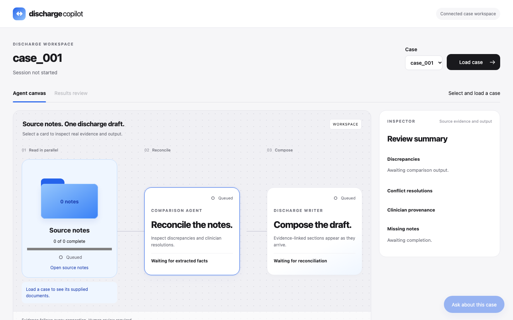

An API-first AI copilot that turns clinical notes into source-linked discharge summaries, with the clinician approving every claim.
physicians in Puerto Rico, 2009 to 2022. Fewer doctors carry the same documentation load.
Puerto Rico hospitals had 30-day readmission rates above the U.S. average of 15.3%. The discharge handoff matters.
